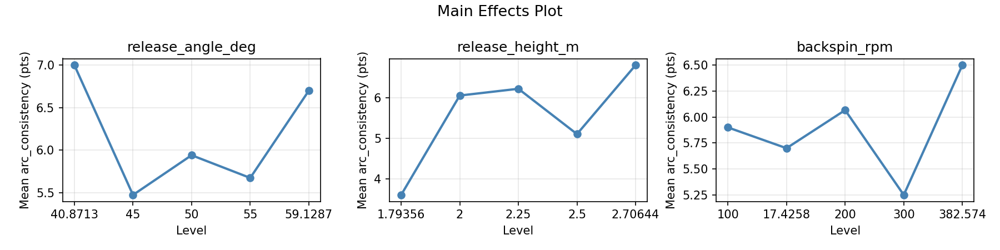
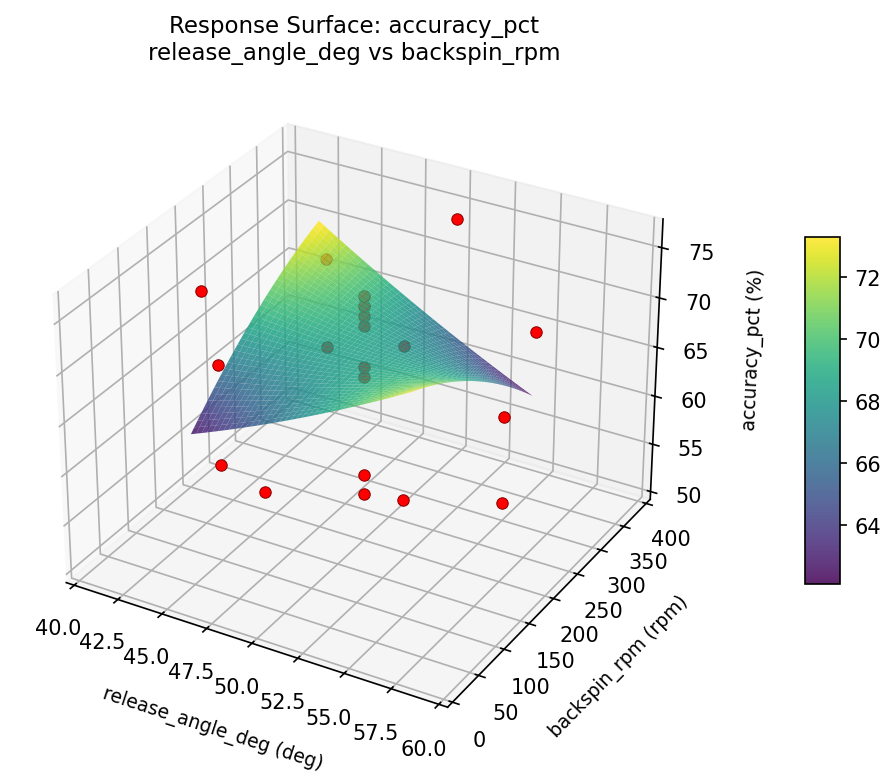
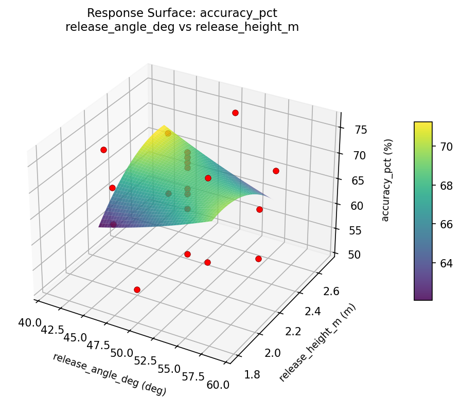
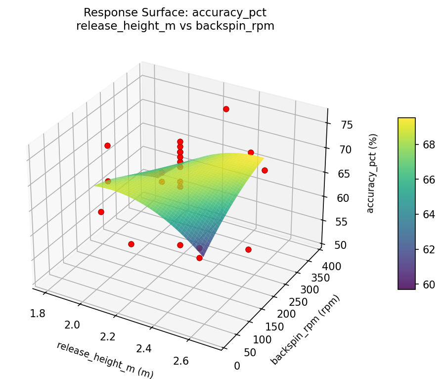
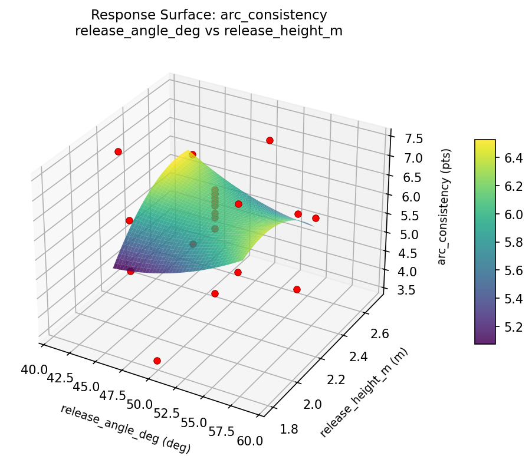

Summary
This experiment investigates basketball free throw form. Central composite design to maximize accuracy and arc consistency by tuning release angle, release height, and backspin rate.
The design varies 3 factors: release angle deg (deg), ranging from 45 to 55, release height m (m), ranging from 2.0 to 2.5, and backspin rpm (rpm), ranging from 100 to 300. The goal is to optimize 2 responses: accuracy pct (%) (maximize) and arc consistency (pts) (maximize). Fixed conditions held constant across all runs include distance = 4.6m, ball = size_7.
A Central Composite Design (CCD) was selected to fit a full quadratic response surface model, including curvature and interaction effects. With 3 factors this produces 22 runs including center points and axial (star) points that extend beyond the factorial range.
Quadratic response surface models were fitted to capture potential curvature and factor interactions. The RSM contour plots below visualize how pairs of factors jointly affect each response.
Key Findings
For accuracy pct, the most influential factors were release height m (40.9%), release angle deg (29.5%), backspin rpm (29.5%). The best observed value was 76.0 (at release angle deg = 55, release height m = 2, backspin rpm = 100).
For arc consistency, the most influential factors were release height m (53.6%), release angle deg (25.5%), backspin rpm (20.9%). The best observed value was 7.4 (at release angle deg = 55, release height m = 2, backspin rpm = 100).
Recommended Next Steps
- Run confirmation experiments at the predicted optimal settings to validate the model.
- Consider whether any fixed factors should be varied in a future study.
Experimental Setup
Factors
| Factor | Low | High | Unit |
|---|
release_angle_deg | 45 | 55 | deg |
release_height_m | 2.0 | 2.5 | m |
backspin_rpm | 100 | 300 | rpm |
Fixed: distance = 4.6m, ball = size_7
Responses
| Response | Direction | Unit |
|---|
accuracy_pct | ↑ maximize | % |
arc_consistency | ↑ maximize | pts |
Configuration
{
"metadata": {
"name": "Basketball Free Throw Form",
"description": "Central composite design to maximize accuracy and arc consistency by tuning release angle, release height, and backspin rate"
},
"factors": [
{
"name": "release_angle_deg",
"levels": [
"45",
"55"
],
"type": "continuous",
"unit": "deg"
},
{
"name": "release_height_m",
"levels": [
"2.0",
"2.5"
],
"type": "continuous",
"unit": "m"
},
{
"name": "backspin_rpm",
"levels": [
"100",
"300"
],
"type": "continuous",
"unit": "rpm"
}
],
"fixed_factors": {
"distance": "4.6m",
"ball": "size_7"
},
"responses": [
{
"name": "accuracy_pct",
"optimize": "maximize",
"unit": "%"
},
{
"name": "arc_consistency",
"optimize": "maximize",
"unit": "pts"
}
],
"settings": {
"operation": "central_composite",
"test_script": "use_cases/212_basketball_shooting/sim.sh"
}
}
Experimental Matrix
The Central Composite Design produces 22 runs. Each row is one experiment with specific factor settings.
| Run | release_angle_deg | release_height_m | backspin_rpm |
|---|
| 1 | 50 | 2.25 | 200 |
| 2 | 55 | 2 | 300 |
| 3 | 45 | 2.5 | 100 |
| 4 | 50 | 2.70644 | 200 |
| 5 | 50 | 2.25 | 200 |
| 6 | 40.8713 | 2.25 | 200 |
| 7 | 50 | 2.25 | 17.4258 |
| 8 | 50 | 2.25 | 200 |
| 9 | 55 | 2.5 | 100 |
| 10 | 59.1287 | 2.25 | 200 |
| 11 | 50 | 2.25 | 200 |
| 12 | 50 | 1.79356 | 200 |
| 13 | 50 | 2.25 | 200 |
| 14 | 45 | 2 | 300 |
| 15 | 50 | 2.25 | 200 |
| 16 | 55 | 2 | 100 |
| 17 | 50 | 2.25 | 382.574 |
| 18 | 55 | 2.5 | 300 |
| 19 | 50 | 2.25 | 200 |
| 20 | 45 | 2 | 100 |
| 21 | 45 | 2.5 | 300 |
| 22 | 50 | 2.25 | 200 |
Step-by-Step Workflow
1
Preview the design
$ python doe.py info --config use_cases/212_basketball_shooting/config.json
2
Generate the runner script
$ python doe.py generate --config use_cases/212_basketball_shooting/config.json \
--output use_cases/212_basketball_shooting/results/run.sh --seed 42
3
Execute the experiments
$ bash use_cases/212_basketball_shooting/results/run.sh
4
Analyze results
$ python doe.py analyze --config use_cases/212_basketball_shooting/config.json
5
Get optimization recommendations
$ python doe.py optimize --config use_cases/212_basketball_shooting/config.json
6
Generate the HTML report
$ python doe.py report --config use_cases/212_basketball_shooting/config.json \
--output use_cases/212_basketball_shooting/results/report.html
Features Exercised
| Feature | Value |
|---|
| Design type | central_composite |
| Factor types | continuous (all 3) |
| Arg style | double-dash |
| Responses | 2 (accuracy_pct ↑, arc_consistency ↑) |
| Total runs | 22 |
Analysis Results
Generated from actual experiment runs using the DOE Helper Tool.
Response: accuracy_pct
Top factors: release_height_m (40.9%), release_angle_deg (29.5%), backspin_rpm (29.5%).
Pareto Chart

Main Effects Plot

Response: arc_consistency
Top factors: release_height_m (53.6%), release_angle_deg (25.5%), backspin_rpm (20.9%).
Pareto Chart

Main Effects Plot

Response Surface Plots
3D surfaces fitted with quadratic RSM. Red dots are observed data points.
accuracy pct release angle deg vs backspin rpm

accuracy pct release angle deg vs release height m

accuracy pct release height m vs backspin rpm

arc consistency release angle deg vs backspin rpm

arc consistency release angle deg vs release height m

arc consistency release height m vs backspin rpm

Full Analysis Output
RSM surface: rsm_accuracy_pct_release_angle_deg_vs_release_height_m.png
RSM surface: rsm_accuracy_pct_release_angle_deg_vs_backspin_rpm.png
RSM surface: rsm_accuracy_pct_release_height_m_vs_backspin_rpm.png
RSM surface: rsm_arc_consistency_release_angle_deg_vs_release_height_m.png
RSM surface: rsm_arc_consistency_release_angle_deg_vs_backspin_rpm.png
RSM surface: rsm_arc_consistency_release_height_m_vs_backspin_rpm.png
=== Main Effects: accuracy_pct ===
Factor Effect Std Error % Contribution
--------------------------------------------------------------
release_height_m 18.0000 1.5918 40.9%
release_angle_deg 13.0000 1.5918 29.5%
backspin_rpm 13.0000 1.5918 29.5%
=== Summary Statistics: accuracy_pct ===
release_angle_deg:
Level N Mean Std Min Max
------------------------------------------------------------
40.8713 1 70.0000 0.0000 70.0000 70.0000
45 4 65.2500 5.6789 59.0000 71.0000
50 12 68.0833 7.0898 54.0000 74.0000
55 4 62.0000 10.3602 51.0000 76.0000
59.1287 1 75.0000 0.0000 75.0000 75.0000
release_height_m:
Level N Mean Std Min Max
------------------------------------------------------------
1.79356 1 56.0000 0.0000 56.0000 56.0000
2 4 66.7500 7.2744 60.0000 76.0000
2.25 12 69.3333 6.0653 54.0000 75.0000
2.5 4 60.5000 8.2260 51.0000 71.0000
2.70644 1 74.0000 0.0000 74.0000 74.0000
backspin_rpm:
Level N Mean Std Min Max
------------------------------------------------------------
100 4 66.2500 7.8049 59.0000 76.0000
17.4258 1 63.0000 0.0000 63.0000 63.0000
200 12 68.7500 6.9951 54.0000 75.0000
300 4 61.0000 8.2057 51.0000 71.0000
382.574 1 74.0000 0.0000 74.0000 74.0000
=== Main Effects: arc_consistency ===
Factor Effect Std Error % Contribution
--------------------------------------------------------------
release_height_m 3.2000 0.2336 53.6%
release_angle_deg 1.5250 0.2336 25.5%
backspin_rpm 1.2500 0.2336 20.9%
=== Summary Statistics: arc_consistency ===
release_angle_deg:
Level N Mean Std Min Max
------------------------------------------------------------
40.8713 1 7.0000 0.0000 7.0000 7.0000
45 4 5.4750 1.1177 4.2000 6.6000
50 12 5.9417 1.0518 3.6000 6.8000
55 4 5.6750 1.4728 3.8000 7.4000
59.1287 1 6.7000 0.0000 6.7000 6.7000
release_height_m:
Level N Mean Std Min Max
------------------------------------------------------------
1.79356 1 3.6000 0.0000 3.6000 3.6000
2 4 6.0500 1.0472 4.9000 7.4000
2.25 12 6.2167 0.7826 4.0000 7.0000
2.5 4 5.1000 1.3216 3.8000 6.6000
2.70644 1 6.8000 0.0000 6.8000 6.8000
backspin_rpm:
Level N Mean Std Min Max
------------------------------------------------------------
100 4 5.9000 1.3216 4.2000 7.4000
17.4258 1 5.7000 0.0000 5.7000 5.7000
200 12 6.0667 1.0999 3.6000 7.0000
300 4 5.2500 1.1902 3.8000 6.6000
382.574 1 6.5000 0.0000 6.5000 6.5000
Pareto chart (accuracy_pct): use_cases/212_basketball_shooting/results/analysis/pareto_accuracy_pct.png
Pareto chart (arc_consistency): use_cases/212_basketball_shooting/results/analysis/pareto_arc_consistency.png
Main effects (accuracy_pct): use_cases/212_basketball_shooting/results/analysis/main_effects_accuracy_pct.png
Main effects (arc_consistency): use_cases/212_basketball_shooting/results/analysis/main_effects_arc_consistency.png
Optimization Recommendations
=== Optimization: accuracy_pct ===
Direction: maximize
Best observed run: #18
release_angle_deg = 55
release_height_m = 2
backspin_rpm = 100
Value: 76.0
RSM Model (linear, R² = 0.0941, Adj R² = -0.0569):
Coefficients:
intercept +66.8636
release_angle_deg -0.3259
release_height_m -2.1462
backspin_rpm -1.6720
RSM Model (quadratic, R² = 0.5746, Adj R² = 0.2555):
Coefficients:
intercept +60.4689
release_angle_deg -0.3259
release_height_m -2.1462
backspin_rpm -1.6720
release_angle_deg*release_height_m -0.0000
release_angle_deg*backspin_rpm -1.0000
release_height_m*backspin_rpm -1.7500
release_angle_deg^2 +2.5974
release_height_m^2 +3.4973
backspin_rpm^2 +3.4974
Curvature analysis:
backspin_rpm coef=+3.4974 convex (has a minimum)
release_height_m coef=+3.4973 convex (has a minimum)
release_angle_deg coef=+2.5974 convex (has a minimum)
Notable interactions:
release_height_m*backspin_rpm coef=-1.7500 (antagonistic)
release_angle_deg*backspin_rpm coef=-1.0000 (antagonistic)
Predicted optimum (from quadratic model):
release_angle_deg = 50
release_height_m = 1.79356
backspin_rpm = 200
Predicted value: 76.0452
Model quality: Moderate fit — use predictions directionally, not precisely.
Factor importance:
1. release_height_m (effect: 10.0, contribution: 35.1%)
2. backspin_rpm (effect: 10.0, contribution: 35.1%)
3. release_angle_deg (effect: 8.5, contribution: 29.8%)
=== Optimization: arc_consistency ===
Direction: maximize
Best observed run: #18
release_angle_deg = 55
release_height_m = 2
backspin_rpm = 100
Value: 7.4
RSM Model (linear, R² = 0.0740, Adj R² = -0.0804):
Coefficients:
intercept +5.8909
release_angle_deg +0.0649
release_height_m -0.2807
backspin_rpm -0.2102
RSM Model (quadratic, R² = 0.5474, Adj R² = 0.2080):
Coefficients:
intercept +4.9554
release_angle_deg +0.0649
release_height_m -0.2807
backspin_rpm -0.2102
release_angle_deg*release_height_m +0.1375
release_angle_deg*backspin_rpm -0.0875
release_height_m*backspin_rpm -0.2125
release_angle_deg^2 +0.3778
release_height_m^2 +0.5278
backspin_rpm^2 +0.4978
Curvature analysis:
release_height_m coef=+0.5278 convex (has a minimum)
backspin_rpm coef=+0.4978 convex (has a minimum)
release_angle_deg coef=+0.3778 convex (has a minimum)
Predicted optimum (from quadratic model):
release_angle_deg = 50
release_height_m = 1.79356
backspin_rpm = 200
Predicted value: 7.2271
Model quality: Moderate fit — use predictions directionally, not precisely.
Factor importance:
1. release_height_m (effect: 1.5, contribution: 38.6%)
2. backspin_rpm (effect: 1.3, contribution: 33.8%)
3. release_angle_deg (effect: 1.1, contribution: 27.7%)